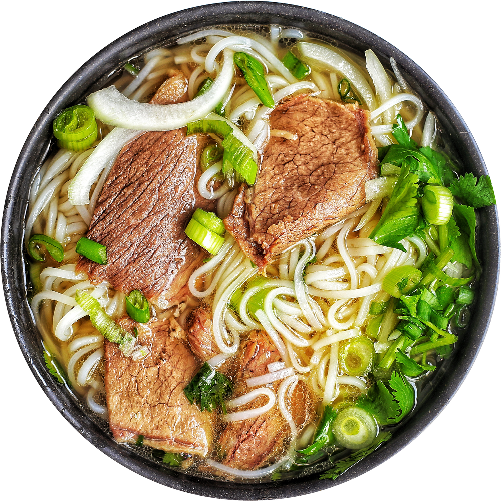

Pho - Vietnamese Noodle Soup

An Image of a beef Vietnamese noodle soup, also known as Pho
Description
Pho is a traditional noodle soup in Vietnamese cuisine, usually
served with beef, broth, herbs, and vegetables
Ingredients
- Beef Soup Bones
- Rice Noodles
- Beef
- Fish Sauce
- Onion
- Spices and Seasonings
- Garnishes
How to Make Pho
- Roast the beef bones and onions until the bones are
browned and the onions are soft.
- Make the broth.
- Soak the rice noodles for an hour. Meanwhile, bring the broth to a simmer.
- Boil the noodles, then drain and add them to a bowl.
- Top with sirloin, cilantro, green onion, and broth. Garnish with your
desired toppings.